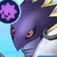

- 세대
- 완전체
- 종족
 데이터
데이터- 속성
 불
불- 소비 메모리
- 12
- 장비 슬롯
- 3
스테이터스 (Lv.99)
HP212010위/78
SP11875위/78
ATK2475위/78
INT10972위/78
DEF19225위/78
SPD16247위/78
막대 길이는 등록된 디지몬 중 최고값 대비 비율이에요. 순위는 스테이터스가 등록된 디지몬끼리 비교해요.
필살기 1
헤비 메탈 파이어 불 SP 15
디지몬 속성과 같음
적 1체에 불속성 위력 110의 물리공격. 자신의 방어력을 10% 올린다.
SS(서포트스킬)
부동
스턴에 걸리지 않는다.
계승기 (레벨업 습득) 4
이 디지몬이 레벨업으로 배우는 스킬이에요. 배운 스킬은 진화·퇴화해도 계속 쓸 수 있어요.
| 습득 Lv | 스킬 | 속성 | SP |
|---|---|---|---|
| 15 | 스피드 브레이크 적 1체의 민첩을 10% 내린다. | 6 | |
| 25 | 피지컬 드레인 적 1체에 무속성 위력 50의 물리공격을 하고 10%를 SP로 흡수한다. | 3 | |
| 35 | 코멧 해머 III 적 1체에 땅속성 위력 105의 물리공격. 명중률 95%. | 9 | |
| 45 | 볼케 네이팜 III 적 1체에 불속성 위력 105의 물리공격. 명중률 95%. | 9 |
이 디지몬이 강한 상대
상대 종족(세로)과 속성(가로)별로 이 디지몬의 공격 필살기 중 가장 높은 배율이에요. 칸에 마우스를 올리면 계산 근거가 보여요.
×3 이상×2 이상보통×1 미만
| 상대 ↓ / → | |||||||||
|---|---|---|---|---|---|---|---|---|---|
| 백신 | ×2.00 | ×2.00 | ×3.00 | ×2.00 | ×2.00 | ×2.00 | ×2.00 | ×2.00 | ×2.00 |
| 데이터 | ×1.00 | ×1.00 | ×1.50 | ×1.00 | ×1.00 | ×1.00 | ×1.00 | ×1.00 | ×1.00 |
| 바이러스 | ×0.50 | ×0.50 | ×0.75 | ×0.50 | ×0.50 | ×0.50 | ×0.50 | ×0.50 | ×0.50 |
| 프리 | ×1.00 | ×1.00 | ×1.50 | ×1.00 | ×1.00 | ×1.00 | ×1.00 | ×1.00 | ×1.00 |
등록된 디지몬 중 ×2 이상으로 공격할 수 있는 상대 97마리
완전체 같은 세대 22 · 다른 세대 상대는 도감에서 볼 수 있어요.
아트라캅테리몬×3.00가루다몬×2.00고래몬×2.00그레이드몬×2.00듀라몬×2.00라이즈그레이몬×2.00래피드몬×2.00메탈그레이몬×2.00사이버드라몬×2.00아이언레오몬×2.00안드로몬×2.00에어로브이드라몬×2.00엔젤우몬×2.00워가루몬×2.00윙드라몬×2.00쥬드몬×2.00치린몬×2.00크라운몬×2.00퍼펫몬×2.00홀리엔젤몬×2.00화이트레오몬×2.00히사류우몬×2.00
진화 가능 디지몬 3
간쿠몬
- 레벨 60 이상
- 최대 HP가 1700 필요
- 공격력이 145 필요
- 방어력이 120 필요
- 재능이 80 필요

베르제브몬
- 레벨 60 이상
- 최대 HP가 2000 필요
- 공격력이 250 필요
- 민첩이 150 필요
- 재능이 80 필요
나사몬
- 레벨 50 이상
- 공격력이 145 필요
- 방어력이 100 필요
- 재능이 20 필요
진화 트리 · 데드메라몬까지 오는 길 + 다음 진화
왼쪽부터 진화 순서예요. 데드메라몬 오른쪽(점선 칸)은 바로 다음 진화 1단계예요. 그 뒤가 궁금하면 그 디지몬을 눌러 따라가 보세요. 선은 출발하는 디지몬의 색을 따라가요. 디지몬을 한 번 누르면 거기서 데드메라몬까지 가는 경로만 남고, 한 번 더 누르면 그 디지몬 페이지로 이동해요. 회색 칸은 아직 정보가 없는 디지몬이에요.
유년기I
유년기II
성장기
성숙기
완전체
궁극체 ▸